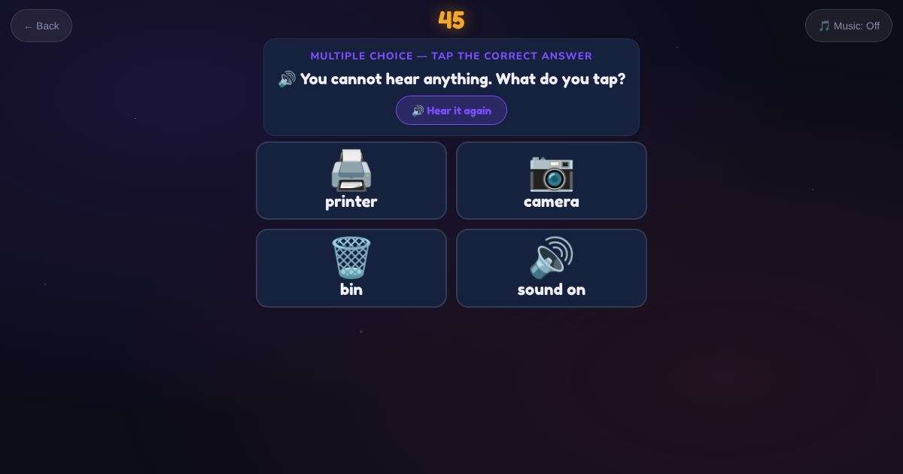

For teachers and tutors
About What Should You Do?
Common phone messages and what to do about them: battery low, no internet, storage full, wrong password, missed call, phone locked, an alarm, and a call from an unknown number. Other rounds ask what to check or tap when the phone will not turn on or nothing will load.

How to play
- Read the phone message.
- Listen to the question.
- Tap what you should do.
Play it as a class
Choose What Should You Do? in the Teacher Game, and talk through the unknown number round as scam awareness.